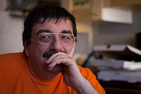

Personalia
Over the years, many people participated in the project. The list of current members includes, but is not limited to:Peter Arkadiev
Institute for Slavistics (RAS) / Russian State University for the HumanitiesIvan Kapitonov
University of California, Los Angeles|
research area: formal semantics, formal pragmatics
contact: ? |
Natalia Korotkova
University of California, Los Angeles|
research area: formal semantics
contact: ? |
Yury Lander
Institute for for Oriental Studies (RAS) / Russian State University for the Humanities|
research area: formal semantics
contact: ? |
Aleksander Letuchiy
Institute for Russian Language (RAS) / Russian State University for the Humanities|
research area: formal semantics
contact: ? |
Nina Sumbatova
Russian State University for the Humanities|
research area: formal semantics
contact: ? |
Yakov Testelets
Institute for Linguistics (RAS) / Russian State University for the Humanities |
research area: syntax
contact: ? |